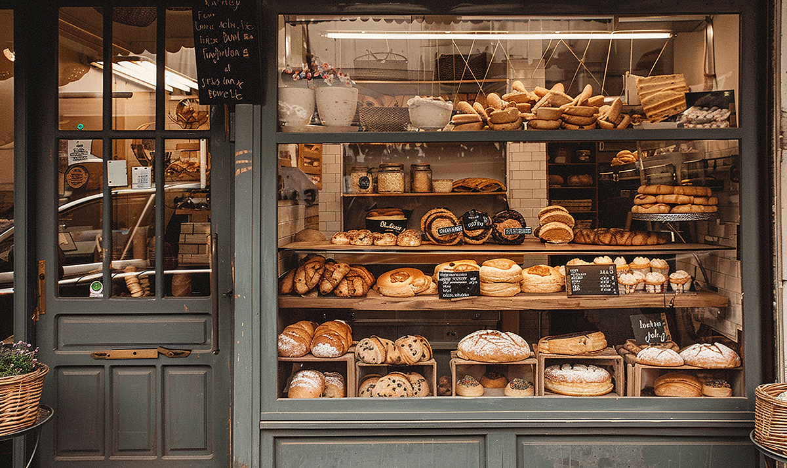

Lead Baker
The lead baker handles daily bread production and prepares seasonal items for the bakery case.
North Star Bakery is a neighborhood bakery that sells bread, pastries, and cakes. It serves local customers and also takes special orders for family gatherings and other events.

We use dependable ingredients and make products in small batches. Seasonal ingredients may be used when they are available.
The lead baker handles daily bread production and prepares seasonal items for the bakery case.
The customer service team answers questions, helps customers choose items, and organizes preorder pickups.